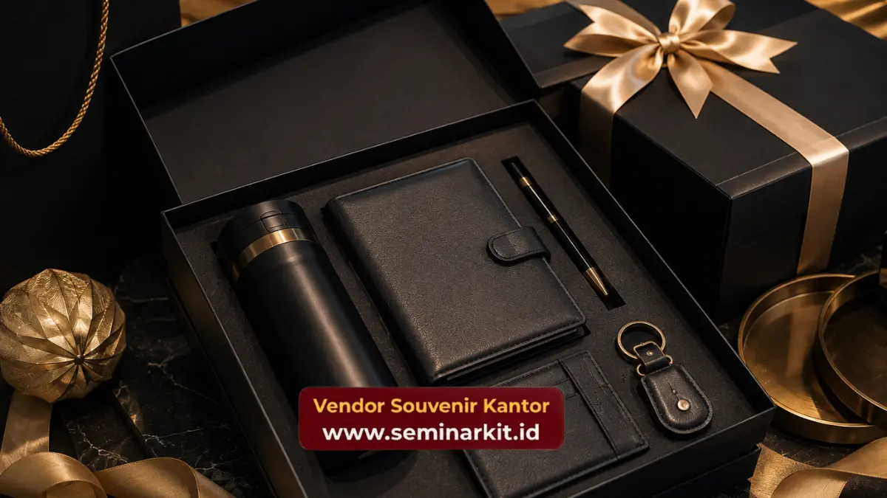

Souvenir custom logo untuk corporate gift adalah merchandise yang diberi identitas visual perusahaan berupa logo, warna korporat, atau tagline melalui teknik seperti bordir, ukir laser, atau cetak UV pada produk pilihan.
Proses ini mengubah barang fungsional biasa menjadi representasi brand yang dapat dibawa dan digunakan berulang oleh penerimanya.
Corporate gift dengan custom logo banyak digunakan perusahaan untuk memperkuat pengenalan brand pada klien, mitra, maupun karyawan.
Di tengah persaingan bisnis yang semakin ketat, banyak perusahaan mulai menyadari bahwa branding tidak hanya terjadi melalui iklan atau media sosial, tetapi juga melalui benda-benda fisik yang digunakan sehari-hari oleh audiens targetnya.
Souvenir custom logo menjadi salah satu titik sentuh branding yang paling personal karena berpindah tangan langsung dari perusahaan ke individu penerimanya.
Bagaimana Proses Customisasi Logo pada Souvenir Kantor Dilakukan
Proses customisasi logo umumnya dimulai dari tahap konsultasi desain, di mana perusahaan menyerahkan file logo dan preferensi warna kepada tim produksi untuk disesuaikan dengan jenis produk yang dipilih.
Setelah desain disepakati, tim produksi menentukan metode customisasi yang paling sesuai berdasarkan material produk, apakah menggunakan bordir untuk bahan kain, ukir laser untuk logam dan kayu, atau cetak UV untuk permukaan plastik dan keramik.
Tahap berikutnya adalah pembuatan sampel produk sebelum memasuki proses produksi massal, sehingga perusahaan dapat memastikan kesesuaian warna, ukuran, dan posisi logo terlebih dahulu.
Setelah sampel disetujui, produksi massal dilakukan dengan pengawasan quality control pada setiap tahap untuk menjaga konsistensi hasil akhir di seluruh unit produk.
Metode Apa Saja yang Digunakan untuk Mencetak Logo pada Souvenir
Beberapa metode customisasi logo yang umum digunakan antara lain bordir untuk produk berbahan kain.
Seperti tas dan topi, ukir laser untuk produk logam dan kayu seperti pulpen dan plakat, cetak UV untuk permukaan keras seperti tumbler dan mug, serta emboss atau timbul untuk produk kulit sintetis seperti notebook dan dompet.

Setiap metode memiliki karakteristik hasil akhir yang berbeda, mulai dari tekstur timbul, warna solid, hingga kesan minimalis elegan.
Pemilihan metode customisasi sebaiknya disesuaikan dengan material produk dan kesan visual yang ingin ditonjolkan.
Karena hasil akhir yang tepat akan membuat logo terlihat menyatu secara natural dengan desain produk, bukan sekadar tempelan tambahan.
Manfaat Souvenir Custom Logo bagi Strategi Branding Perusahaan
Souvenir custom logo memberikan eksposur brand yang berkelanjutan karena produk tersebut terus digunakan oleh penerimanya dalam aktivitas sehari-hari, jauh melampaui durasi acara di mana souvenir tersebut dibagikan.
Setiap penggunaan produk menjadi pengingat visual terhadap perusahaan bagi penerima maupun orang-orang di sekitarnya.
Selain fungsi eksposur, souvenir custom logo juga membangun konsistensi identitas visual perusahaan di berbagai titik sentuh, mulai dari acara internal hingga interaksi dengan klien eksternal.
Konsistensi ini penting karena identitas visual yang seragam di berbagai media memperkuat pengenalan brand secara keseluruhan.
Apakah Souvenir Custom Logo Efektif Dibanding Media Promosi Digital
Souvenir custom logo memiliki karakteristik berbeda dari media promosi digital karena sifatnya yang fisik dan tahan lama.
Sehingga dapat memberikan eksposur brand berulang tanpa memerlukan biaya tambahan setelah produksi awal.
Media digital umumnya memerlukan biaya berkelanjutan untuk mempertahankan visibilitas, sementara souvenir fisik terus bekerja secara pasif selama produk tersebut digunakan oleh penerimanya.
Kedua jenis media ini sebenarnya saling melengkapi dalam strategi branding perusahaan secara keseluruhan.
Di mana souvenir custom logo lebih efektif untuk memperkuat kedekatan personal, sementara media digital lebih unggul dalam menjangkau audiens dalam skala luas.
Jenis Produk yang Paling Cocok untuk Corporate Gift Custom Logo
Produk dengan tingkat penggunaan tinggi seperti tumbler, pulpen, dan notebook menjadi pilihan populer untuk corporate gift karena frekuensi penggunaannya yang tinggi memberikan nilai eksposur brand yang optimal.
Produk-produk ini juga relatif mudah dikustomisasi dengan berbagai metode logo tanpa mengurangi fungsi utamanya.
Selain produk fungsional harian, hampers custom logo yang berisi kombinasi beberapa produk dalam satu kemasan bertema turut menjadi pilihan menarik untuk momen-momen khusus seperti perayaan tahunan atau apresiasi klien, karena memberikan kesan lebih istimewa dibanding produk tunggal.
Souvenir custom logo merupakan investasi branding yang memberikan nilai jangka panjang bagi perusahaan, baik dalam memperkuat identitas visual maupun membangun kedekatan dengan klien dan karyawan.
Pemilihan metode customisasi dan jenis produk yang tepat menjadi kunci agar hasil akhir mencerminkan kualitas dan karakter perusahaan secara konsisten.
Wujudkan corporate gift custom logo perusahaan Anda bersama vendorsouvenirkantor.web.id. Tim produksi kami siap membantu dari konsultasi desain hingga hasil akhir yang siap didistribusikan.

Banner promosi: klik gambar untuk langsung terhubung ke WhatsApp tim sales.